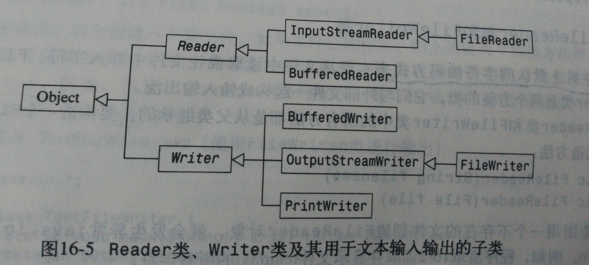
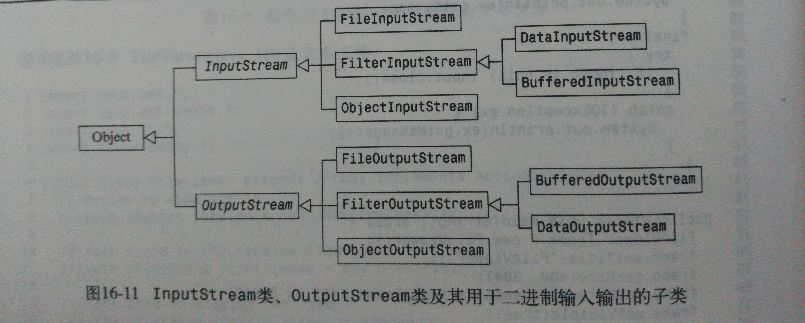
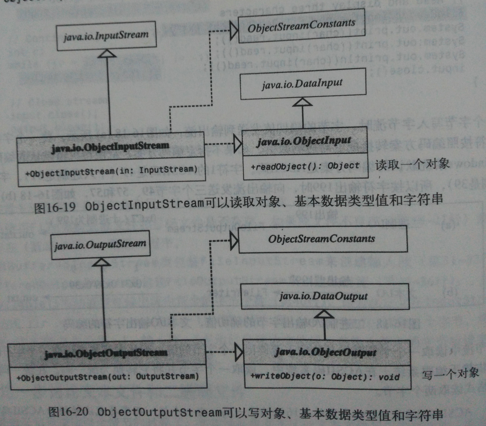

本文总结源自《Java语言程序设计》原书第五版，作者为Y.daniel Liang，习题及编程练习均参照此书。
主要内容
本章主要讨论数据持久化的问题。一般Java程序在结束后所有存储在内存中的数据都会消失，为了保留这些数据，就要学会如何将它们存储到磁盘文件或光盘文件中。
本章介绍的主要是两个方面的内容：文本I/O和二进制I/O。为了知识的连贯性，需要先介绍相关的知识，以方便理解。
计算机中所有文件都是以二进制格式来存储的。文本I/O是在二进制I/O基础上提供了一层抽象，它封装了字符的编码和解码过程，在文本I/O中自动进行编码和解码。
提前需要知道的一些知识
- windows和Unix文件存储目录的不同。
- 位、字节、字符、ASCII码和统一码Unicode相关知识。
位，英文是bit，是用来表示计算机数据的一种计量单位，8bit为一个字节，ASCII码采用一个字节存储二进制数据，Java中统一码采用两个字节进行存储，统一码的低字节就是ASCII码，因此在Java中，字符是由两个字节构成的。 - Java中基本数据类型都占几个字节。如，int类型是4个字节，char类型是2个字节。
文件类File
无论是文本I/O还是二进制I/O的构造方法，都需要传入文件类参数或者文件名参数。
文件系统相关
- 目录路径与文件名全称是平台依赖的。
- 为了解决不同平台路径与分隔符的问题，File类提供了四个常量：
- File.PathSeparator
- File.PathSeparatorChar
"/"or"\" - File.Separator
- File.SeparatorChar
";"or":"
绝对路径（absolute path）名是依赖于系统的，如果想开发平台无关的程序，一定不要用绝对路径。可以使用和平台无关的常量创建一个相对路径。（简单的方法是无论Win还是Linux，相对路径分隔符都使用”/“即可。）
File类的常用方法简录
- 构造方法：
- File（pathname：String）
······
- File（pathname：String）
- 常用方法
- exists（） 检测文件是否存在
- isDirectory（）/isFile（） 是目录/文件
- isAbsolute（） 该文件是否由绝对路径创建
- getAbsolutePath（） 返回File对象的绝对路径
- getCanonicalPath（） 返回值与getAbsolutePath（）相同，但是删除了一些冗余符号
- getPath（）
- getParent（）
······
文本I/O类
- File类不提供从文件中读写数据的方法，因此需要选择适当的输入输出类来进行I/O操作。输入输出都是对于程序本身而言。
 - Reader类是文本输入的根类，Writer类是文本输出的根类。
- Reader类常用方法：
- read（） 从输入流读取下一个字符，返回值在0到65525之间，表示该字符的统一码。到达流的结尾时返回-1
···
- read（） 从输入流读取下一个字符，返回值在0到65525之间，表示该字符的统一码。到达流的结尾时返回-1
- Writer类常用方法：
- flush（） 刷新该输出流，并将已经输出到缓冲区的所有字符写入文件
···
- flush（） 刷新该输出流，并将已经输出到缓冲区的所有字符写入文件
- read（）方法读取字符，如果没有有效字符，那么它将阻塞线程。
- 处理PrintWriter类，其他文本I/O类中的所有方法都声明抛出异常java.io.IOException。
FileReader类和FileWriter类
- 使用主机上默认的字符编码方式进行读写操作。
- 所有方法均继承自父类，没有新的方法。
- FileReader类read（）方法是读取一个字节
- FileWriter构造方法支持参数append：
- FileWriter(File file,booean append) 如果原文件存在，可以通过设置append参数决定是覆盖还是追加
InputStreamReader类和OutputStreamWriter类
- 可以在构造方法中指定使用哪种编码方案进行读写操作。
- 用于实现字符与字节之间的转化。写入OutputStreamWriter的字符用指定的编码方案翻译为字节。
- 除
getEncoding()方法外，均继承自父类方法。getEncoding()方法返回这个数据流使用的编码方案名称。
Java程序使用的是统一码（Unicode）。从FileReader流中读取一个字符时，返回该字符的统一码。字符在文件中的编码可能不是统一码，Java自动将它转化为统一码，想FileWriter流中写入字符时，Java自动的将统一码转化为文件指定编码。
BufferedReader类和BufferedWriter类
- 用于输出字符与字符串。
- BufferedReader类和BufferedWriter类通过减少读写次数来加快输入输出的速度。缓冲区数据流使用一个类似高速缓冲器作用的字符数组。缓冲区默认是
8192个字节。 - 缓冲区输出流只有当它的缓冲区已满或调用
flush()方法才调用写入文件的方法。 - BufferedReader常用方法：
- readLine（） 整行读取（不带换行符的一行），到达流的末尾时，返回
null
···
- readLine（） 整行读取（不带换行符的一行），到达流的末尾时，返回
- BufferedWriter常用方法：
- newLine（） 向文件写入一个依赖平台的换行符。以下方法可以获得系统的换行符：
1
static String lineSeparator = (String) java.security.AccessController.doPrivileged(new sun.security.action.GetPropertyAction("line.separator"));
- newLine（） 向文件写入一个依赖平台的换行符。以下方法可以获得系统的换行符：
物理输入输出的I/O设备比CPU的速度慢得多，因此读取一个大文件时，使用缓冲区能够较大地提高效率。
PrintWriter类和PrintStream类
- 可以将对象、字符串和数值以
文本方式输出。 - PrintWriter的效率比PrintStream高，功能一样，前者用于替代后者。
- 打印数值、字符或布尔值，就是将其转化为字符串打印。打印一个对象就是打印该对象用
toString()方法返回的描述字符串。 - printf（）方法用于格式化输出。
- System.out解析
out是定义在System类中类型为PrintStream的一个静态变量。默认情况下，out是标准输出设备，即屏幕。可以使用setOut()方法设置新的out。 - 常用构造方法：
- public PrintWriter（Writer out，boolean autoFlush） autoFlush为true，println方法会引起缓冲区刷新
二进制I/O
- 二进制输入输出不需要进行文本的编码与解码操作，所以要比文本I/O效率高。向文件写入字节，就是将源字节复制到文件中，从文件读取字节，就是将文件中的字节原样返回。
 - InputStream和OutputStream的所有方法与Reader和Writer中的方法类似，不同的是前者操作的是字节，后者操作的是字符。
- InputStream类和OutputStream类是抽象类。
- InputStream类常用方法：
- read（） 从输入流中读取数据的下一个字节，返回值为0~255之间的整数，如果到达流尾，返回-1
- available（） 返回可以从该输入流读取的字节数
- mark（int readlimit） 在该输入流中标记当前位置
···
- OutputStream类常用方法：
- write（int b） 将指定字节写到输出流，参数b是int型，写入的值是（byte）b
- flush（）
···
FileInputStream类和FileOutputStream类
- 继承自父类的方法，没有引进新方法
- 输入输出均是操作的字节。
FilterInputStream类和FilterOutputStream类
过滤器数据流（filter stream）是为某种目的过滤字节的数据流。基本字节输入流提供的读取方法只能用来读取字节，如果想要读取整数值、双精度值或字符串，需要一个过滤器类来包装输入流。
- 该类是父类，如果需要处理基本数值类型数据时，可以使用DataInputSteam类和DataOutputStream类来过滤字节。
DataInputStream类和DataOutputStream类
- DataInputSteam从数据流中读取字节并将它们转化为适当的基本类型值或字符串。DataOutputStream将基本类型的值或字符串转化为字节并将这些字节输出到输出数据流。
- DataOutputStream类和DataInputSteam类以平台无关的方式读写Java的基本类型值和字符串。
- 可以使用
input.available()==0方法检测读取是否已经到了结尾。 - DataInputSteam扩展
FilterInputStream类并实现DataInput接口；DataoutputStream扩展FilterOutputStream类并实现DataOutput接口。 - DataInput类常用方法：
- readInt（） 从输入流中读取一个int值（输入流是一个字节一个字节读入，DataInputSteam的作用就是将读入的字节4个4个组合，其他方法类似）
- readUTF（） 从UTF格式中读取一个字符串
···
- Dataoutput类常用方法：
- writeByte（int v） 将参数v的低8位（一个字节）写到输出流（如果参数v是在Java中被赋值，那么v的统一码是16位（两个字节），调用该方法只能将低字节（低8位）写到输出流）
- writeBytes（String s） 将字符串中字符的低8位写到输出流，适合由ASCII字符构成的字符串
- writeChar（char c） 向输出流中写一个字符（两个字节构成）
- writeChars（String s） 将字符串s中的每一个字符依次写到输出流，每个字符占两个字节
- writeInt（int v） 向输出流写一个int值
- writeUTF（String s） 用UTF格式写出一个字符串
···
由此可知，如果要使用二进制I/O，必须使用相对应的输入输出方法以及正确的顺序才能得到正确的数据。
- UTF编码
- UTF是一种编码方案，它可以使系统高效的同时处理统一码（Unicode）和ASCII码。ASCII码字符集是统一码字符集的一个子集。
- 为了解决8位ASCII码转为16位统一码造成的浪费问题，提出来UTF编码。UTF编码方案分别使用1字节、2字节或3字节来存储字符。
- ASCII码的值不会超过0x7F,使用一个字节编码
- 不超过0x7FF的统一码值编码为两个字节
- 其余编码为三个字节
- UTF字符的开始几位表明该字符的编码是几个字节的：
- 首位是0,一个字节的字符
- 前三位是110，两个字节字符的第一个字节
- 前四位是1110，它是三字节字符的第一个字节
- UTF字符串的前两个字节用来存储字符串中的字符个数。如：writeUTF(“ABCDEF”)写入的是8个字节
- 如果字符串的大多数字符都是普通的ASCII字符，采用UTF格式存储的效率是很高的。
BufferedInputStream类和BufferedOutputStream类
- 提供缓冲区，加快读写
字节的效率。缓冲区默认大小为512个字节。
对象输入输出
- DataInputSteam类和DataOutputStream类可以实现基本数据类型与字符串的输入输出，在此基础上，ObjectInputStream类和ObjectOutputStream类还允许对象的输入输出。
- 可以完全用ObjectInputStream类和ObjectOutputStream类替代DataInputSteam类和DataOutputStream类。
- ObjectInputStream扩展
InputStream类并实现ObjectInput和ObjectStreamConstants接口,ObjectInput是DataInput的子接口；ObjectOutputStream扩展OutputStream类并实现ObjectOutput和ObjectStreamConstants接口,ObjectOutput是DataOutput的子接口。ObjectStreamConstants包含ObjectInputStream类和ObjectOutputStream类中所用的常量。
 - 常用构造方法：
- public ObjectInputStream（InputStream in）
- public ObjectOutputStream（OutputStream out）
- 可以向数据流中写入多个对象或基本类型数据。从对应的ObjectInputStream中读回这些对象时，必须与其存入时的类型和顺序相同。对于必要的类型，必须使用Java安全性所要求的类型转换。（显式转换）
可序列化接口Serializable
- 并不是每一个对象都可以写到输出流。可以写入到输出流中的对象称为
可序列化的（serializable）。 - 可序列化的对象时java.io.Serializable接口的实例，所以可序列化对象的类必须实现Serializable接口。
- Serializable接口是一种标记性接口。它没有方法，要实现这个接口可以启动Java机制，自动执行存储对象或数组的过程。
- Java提供了自动进行写对象这个过程的内在机制，这个过程称为
对象序列化（object serialization）。与此相反，读取对象的过程称为对象解读序列化（object deserialization）。它是在ObjectInputStream类中实现的。 - 存储一个可序列化对象时，会对该对象的类进行编码，编码包括类名、类的说明标志、对象实例变量的值以及任何从初始对象引用的其他对象包，但是不存储对象静态变量的值。
如果一个对象时Serializable的实例，但它包含一个非序列化的数据域，该对象不是可序列化的。为了是该对象可序列化，可以给这些数据域加上关键字
transient，告诉Java虚拟机将对象写入对象流时忽略这些数据域。1
2
3
4
5
6
7public class Foo implements Serializable {
private int v1;
private static double v2;
private transient A v3 = new A();
}
class A { } //A is not serializable如果一个对象多次写入对象流，第一次存储一个可序列化对象时，会创建一个序列号，Java虚拟机将对象的所有内容包括序列号一起写入对象输出流，以后的存储，都是存储序列号的一个拷贝，换句话说，只存储引用。
序列化数组
当数组中的元素是可序列化的时候，数组也是可序列化的。一个完整的数组可以用writeObject方法存入文件，此后使用readObject方法将它读出。
随机读写文件
- Java提供了RandomAccessFile类，它允许对文件内的随机位置进行读写。
- RandomAccessFile类实现了DataInput和DataOutput接口。
- 常用方法：
- RandomAccessFile（File file，String mode） 以指定File和模式创建，模式可以是”r”、”rw”等
- getFilePointer（） 返回从文件头到发生读写位置的偏移量
- length（） 返回文件的字节数
- seek（long pos） 设置从文件头到下一次读写位置的偏移量
- setLength（long newLength） 给这个文件设置一个新长度
···
- 随机读写文件是由字节序列组成的，在其中某个字节的位置处有一个称为
文件指针（file pointer）的特殊标记。文件的读写操作就是在文件指针所指的位置上进行的。 - 文件指针置于文件的开头。
复习小结
- 本章可能出现的异常总结如下：
- 企图用一个不存在的文件创建FileReader/FileWriter对象，出现异常
FileNotFoundException。 - 到达文件尾后还想读取数据，报
java.io.EOFException异常。 - readObject（）方法可能抛出
ClassNOtFoundException异常。
- 企图用一个不存在的文件创建FileReader/FileWriter对象，出现异常
- FilterInputStream类和FilterOutputStream类的作用在于：基本的字节输入输出流只能操作字节，但是基本类型的数据如int类型是4个字节，如果想要读取正确的int值，仅靠基本的FileInputStream和FileOutputStream类是无法完成的，因此需要在这基础上包装一层Filter Stream，使用该包装类的方法可以正确存取基本类型的数据。
- 随机读写文件常被用来处理记录型文件，因为记录型文件每条记录的大小可以设置为固定的。这样，每次操作时，就可以确定文件指针的偏移量了。
- 随机读写虽然说是文件指针位于文件头，但显示的实际情况是：
在空文件中插入一条记录，此时文件指针位于这条记录末尾，但是显示的却是这条记录，这点要牢记。 - I/O类可分为文本I/O和二进制I/O。文本I/O将数据解释成字符的序列，二进制I/O将数据解释成原始的二进制数。文本在文件中如何存储依赖于文件的编码方式。Java对文本I/O提供自动编码与解码。
编程练习
- 16.1 单词统计可以使用StringTokenizer类的countTokens（）方法或者使用正则匹配。
- 16.4 重写Java源代码格式。代码提供了行尾风格和次行风格相互转化的方法。
- 16.5 使用字符串的
replaceAll()方法删除字符。 - 16.14 代码参考GUI小练习-简易计算器
- 16.15 代码见文件夹AddressBook。
- 其余习题16.7 16.8 16.10 16.11源代码见我的Github： chapter16